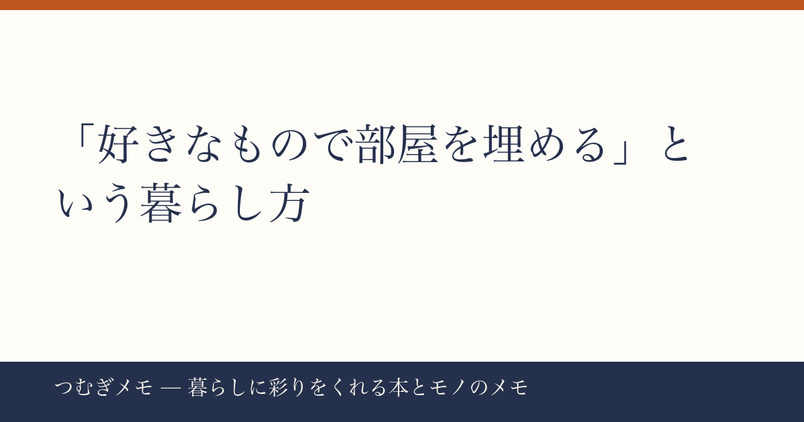

こんにちは、つむぎです。今週のXとランキングを眺めていたら、ある一本の「線」が見えてきたので、迷わずそこを深掘りすることにしました。
この記事でわかること：「好きなもので自分の空間を整える」という考え方が、なぜ今これほど多くの人に刺さっているのか、その背景と今日から動ける具体的な一手。
---
今週の要点
- Xで2,454いいねを集めた「好きな物で部屋を埋めよう」投稿が、暮らし系アカウントの中で今週最大の共感を呼んだ
- 楽天ランキングでは「耐熱ガラス保存容器7点セット」「衣装ケース（コロ脚）」「ルンバ」と、収納・家事ラク系のアイテムが複数同時ランクインしている
- 「部屋を整える」という行動は、モノ選びと片づけの両輪で初めて機能する
---
今週のXで最も目を引いたのが、2,454いいねを獲得した次の文章です。
> 自分の部屋に「お気に入りの物」で埋め尽くしてください。好きな枕、好きなカップ、好きな毛布、好きな椅子、好きな花、好きなお茶、好きな文房具、好きなぬいぐるみ。自分を見失いそうなときに、元の自分に戻れるように。
短い文章なのに、なぜここまで拡散されたのか。
僕が思う理由は「防衛」という言葉に集約されます。お気に入りのものを並べようという話は、インテリア雑誌でも何度も語られてきた。でもこの投稿が違うのは、「自分を見失いそうなとき」という前提を置いたことです。部屋を美しくしようという美意識の話ではなく、精神的なよりどころとしての空間設計という切り口は、消耗しやすい現代の生活リズムにクリーンヒットした。
実践として今日できることはシンプルです。まず「好きなカップ」だけ決める。 棚の奥に眠っている「いつか使おう」のカップを出すか、ひとつだけ本当に好きなものを買い直す。毎朝触れるものから変えると、思いのほか部屋の体感が変わります。
---
感情的な共感だけで終わらないのが、今週のバズ材料の面白いところです。楽天ランキングを見ると、空間整備に直結するアイテムが複数同時にランクインしています。
耐熱ガラス保存容器のiwaki「パック&レンジ 7点セット」がランキング1位を獲得（レビュー1,299件・★4.78）。冷蔵庫の中身を「見える化」できるガラス容器は、キッチンという生活動線の中心を「好きな空間」に整えるアイテムとして機能します。プラスチック容器と違い、劣化で買い替えるサイクルが長く、使うたびに「いいものを持っている」という小さな満足が積み重なる。
同じくランクインしていた「コロ脚 中が透けない壁付きチェスト」（レビュー6,086件・★4.41）は逆のアプローチです。見せたくないものを隠すことで、見えている空間をすっきりさせる。そしてルンバ（Roomba Plus 505 Combo）の57%OFFクーポン展開は、「掃除を自動化して好きな時間を守る」という文脈で読めます。
分析するなら、これらは全部「余白を作る」ための行動です。好きなものを飾るためには、まず好きでないものを整理する場所が必要。収納とお気に入りは対立しているのではなく、セットで機能している。
今日できる実践： 引き出しかクローゼットをひとつだけ選んで、「なんとなく入れている」ものを5分で仕分ける。「捨てる」「移す」を決めなくていい。まず「このカテゴリには何があるか」を把握するだけで、空間の解像度が上がります。
---
好きなものを意識的に選ぶ力は、練習で伸ばせます。その練習として僕がずっと勧めているのが、暮らしや「もの選び」を丁寧に書いた本を読む習慣です。
選ぶ力が弱いと、部屋は「安くて便利だったもの」で埋まっていきます。それ自体は悪くないけれど、今週2,454いいねを集めた投稿が指しているのは、もう一段上の話です。「この枕が好き」「このカップで飲むと気持ちが落ち着く」という感覚を自分の中に持っているかどうか。それはショッピングの前に、自分の感覚を言語化する訓練が必要です。
本を読むとき、「この著者はどういう理由でこれを選んでいるんだろう」という視点を持つだけで、ページがインテリアの教科書になります。暮らし系の雑誌も同じで、写真を見るのではなく「なぜその配置なのか」を読もうとする姿勢が大事です。
Amazonで『「ぼくたちに、もうモノは必要ない。」佐々木典士』を見る
この本は「減らす」文脈で語られることが多いですが、本質は「自分にとって必要なものだけに囲まれる」という選別眼の話。今週の投稿と完全にリンクします。
今日できる実践： 手持ちの本や雑誌を1冊取り出して、「著者が好きだと言っているものと、自分が好きなものは重なるか」を確認する。ずれている部分がわかれば、自分の好みの輪郭が見えてきます。
(PR) 暮らし系の雑誌を定期購読すると、毎月「好きを更新する」インプットが自動的に届く仕組みができます。Fujisan.co.jp 雑誌のオンライン書店を見るでは最大70%割引で定期購読できるので、気になる雑誌があれば覗いてみてください。
---
Q. 好きなもので部屋を埋めようとすると、お金がかかりすぎませんか？
一気に揃えようとするから重く感じるだけで、順番に「交換する」だけなら出費は最小限です。今あるものを使い切って、次に買うときだけ「本当に好きか」を問う。これを繰り返すだけで、数年後の部屋は別物になります。「全部変える」ではなく「次の1個を選び直す」という単位で動くと続きます。
Q. そもそも自分が何を好きかわからないのですが。
よくある話で、それは感覚が鈍くなっているだけで消えてはいません。手がかりは「捨てにくいもの」です。断捨離しようとして手が止まったもの、理由はわからないけど捨てられないもの。そこに「好き」の原型があります。なぜ捨てられないかを言葉にするところから始めてみてください。
Q. 収納グッズを買っても、結局散らかってしまいます。
収納グッズは「整理した後」に買うものです。何がどれだけあるかを把握する前に入れ物を買うと、入れ物の中が整理されないまま増えます。まず「今ある空間で仮置きしながら分ける」を先にやって、サイズや数が見えてから購入を決めると失敗が減ります。
---
今週は「好きなもので部屋を埋める」という一本の軸で、Xのバズと楽天ランキングの複数アイテムがつながりました。感情的な共感と、実際の買い物行動が同じ方向を向いているとき、それは本物の「潮流」だと思っています。
なお、このブログ「つむぎメモ」はAIとの共同作業を取り入れた実験的な運営をしています。記事の構成や整理にAIを活用しながら、判断と言葉は僕自身のものにするというスタイルで続けています。今後もそのあたりを少しずつ話していけたらと。
また来週。
📚 目次へ